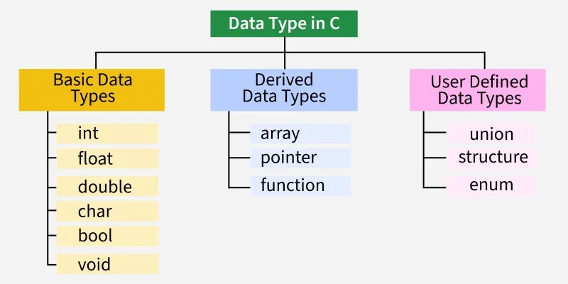

A data type is a way of describing what kind of data a variable or function holds and how large it is. In C this information is provided to the compiler so that the compiler knows how much memory to allocate and how to interpret the binary bits of data.
